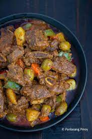

Beef Caldereta

Ingridients:
- Beef
- Garlic
- Onion
- Beef Broth
- Liver Spread
- PO TA TOES!
- Dried Bay Leaves
- Chili Flakes(optional)
- Salt
- Sugar(optional)
Steps:
**CREDITS TO PANLASANG PINOY**
- Heat the cooking oil in the cooking pot or pressure cooker.
- Sauté the onion and garlic.
- Add the beef. Cook for 5 minutes or until the color turns light brown.
- Add the dried bay leaves and crushed pepper. Stir.
- Add the liver spread. Stir.
- Pour-in the tomato sauce and beef broth.
- Cook the beef until it becomes tender (about 30 mins if using a pressure cooker, or 1 to 2 hours if using an ordinary pot).
- Add potato and carrots. Cook for 8 to 10 minutes.
- Put the green olives and bell peppers in the cooking pot. Stir and continue to cook for 5 minutes more.
- Add salt and pepper to taste
- Serve Hot. Enjoy!